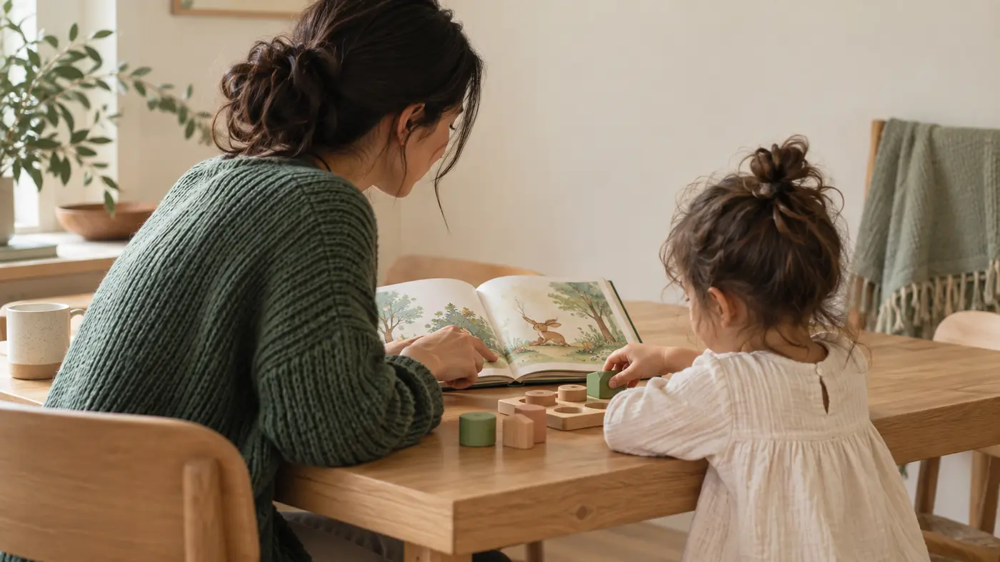

Predictability
Familiar sequences can make transitions easier because children begin to recognize what is happening and what comes next.
Monthly family resource
Practical, evidence-informed early-years ideas designed to help families understand young children and make everyday moments more meaningful.
By Mary Aliu, RECE October 2026

October 2026
Young children benefit from knowing what comes next.
Simple routines—getting dressed, putting shoes away, washing hands before meals, tidying toys or choosing a bedtime book—can help children anticipate the flow of their day and participate more confidently in it.
These everyday moments also create repeated opportunities to practise independence, language, memory and self-regulation.
Routines do not need to be rigid or perfect. They work best when they are predictable enough to guide the child and flexible enough to respond to real family life.
Why it matters
Repeated everyday experiences help young children understand expectations, practise skills and gradually take a more active role in their own care.
Familiar sequences can make transitions easier because children begin to recognize what is happening and what comes next.
Small responsibilities—such as putting away shoes or carrying a plate—give children repeated chances to participate and practise doing things for themselves.
Routine language, reminders and repeated steps can support understanding, memory and the gradual development of self-regulation.
Try this at home
Choose one routine. Give your child a little more time to take part before stepping in to help.
A simple practice
You do not need to change the whole day. Start with one moment that already happens regularly.
Pick one familiar routine: shoes, handwashing, tidy-up, mealtime or bedtime.
Give a short reminder, then allow a little extra time for your child to try before helping.
Acknowledge the effort: “You remembered where your shoes go.” Keep the focus on participation, not perfection.
Something to remember
The routines families repeat every day can become meaningful opportunities for connection, communication and growing independence.
Family reflection
Watch what your child can already do, decide where a small amount of support is still helpful, and give the routine time to become familiar.
This resource provides general early-years education and is not a substitute for individualized medical, developmental or clinical assessment.
Get Early Years Matter
Join the mailing list for practical ideas about development, behaviour, routines, learning and everyday family life.
Need more individualized support?
If you have a specific early-years question about routines, behaviour, communication, play or development, request a consultation with Stars Haven Academy.